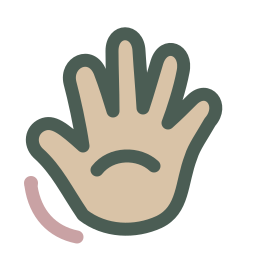

<!doctype html><html lang="zh-CN"><meta charset="utf-8"><title>图标尺寸检查</title><style>body{margin:24px;background:#f5f5f0;font:14px sans-serif;color:#384d42}article{display:grid;grid-template-columns:220px repeat(6,1fr);align-items:center;gap:12px;border-bottom:1px solid #ddd;padding:8px}h2{font-size:16px;font-weight:500}article div{text-align:center;padding:8px}small{display:block;margin:8px;color:#888}img{object-fit:contain}.dark{background:#30483a;color:white}</style><article><h2>以手寻语 SignTrace</h2><div><small>16px</small></div><div><small>32px</small></div><div><small>64px</small></div><div><small>128px</small></div><div><small>单色</small></div><div class="dark"><small>反白</small></div></article><article><h2>分社手语词典</h2><div><small>16px</small></div><div><small>32px</small></div><div><small>64px</small></div><div><small>128px</small></div><div><small>单色</small></div><div class="dark"><small>反白</small></div></article><article><h2>传情绘意 · 手语版</h2><div><small>16px</small></div><div><small>32px</small></div><div><small>64px</small></div><div><small>128px</small></div><div><small>单色</small></div><div class="dark"><small>反白</small></div></article><article><h2>拼好课</h2><div><small>16px</small></div><div><small>32px</small></div><div><small>64px</small></div><div><small>128px</small></div><div><small>单色</small></div><div class="dark"><small>反白</small></div></article><article><h2>北大知道 PKU Know</h2><div><small>16px</small></div><div><small>32px</small></div><div><small>64px</small></div><div><small>128px</small></div><div><small>单色</small></div><div class="dark"><small>反白</small></div></article><article><h2>清华知道 THU Know</h2><div><small>16px</small></div><div><small>32px</small></div><div><small>64px</small></div><div><small>128px</small></div><div><small>单色</small></div><div class="dark"><small>反白</small></div></article><article><h2>接锅</h2><div><small>16px</small></div><div><small>32px</small></div><div><small>64px</small></div><div><small>128px</small></div><div><small>单色</small></div><div class="dark"><small>反白</small></div></article><article><h2>2026 手语分社骨干年终总结</h2><div><small>16px</small></div><div><small>32px</small></div><div><small>64px</small></div><div><small>128px</small></div><div><small>单色</small></div><div class="dark"><small>反白</small></div></article></html>